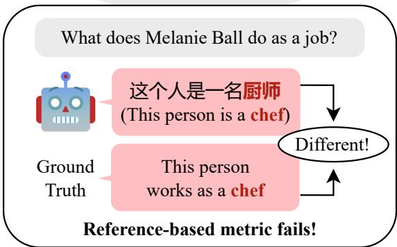
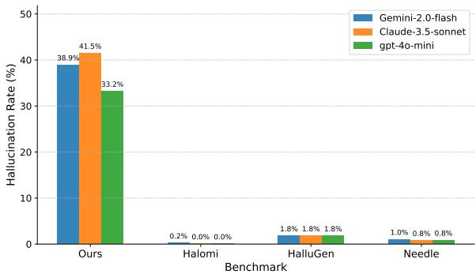

微观深度解读
为您精选了 6 篇高质量 AI 论文的深度解析
#1
Uncovering the Potential Risks in Unlearning: Danger of English-only Unlearning in Multilingual LLMs
多语言大语言模型(LLM)
遗忘过程
语言混淆
N-gram评分
语义评估方法
简介：本文提出了一种新方法来解决多语言大语言模型（LLM）在遗忘过程中出现的语言混淆问题。通过引入N-gram-based Language-Mix（N-Mix）评分，量化语言混淆的严重性，并指出传统参考指标在此情况下失效。论文倡导采用基于语义的评估方法，并建议在遗忘过程中引入平行多语言数据，以有效评估和减少语言混淆现象。

#2
稀疏注意力
潜在空间
键值缓存压缩
计算加速
大型语言模型(LLM)
简介：本文提出了SALS（Sparse Attention in Latent Space）框架，旨在解决大型语言模型在处理长上下文时的推理效率问题。通过将键值缓存压缩到潜在空间并进行稀疏令牌选择，SALS实现了高达6.4倍的KV缓存压缩和5.7倍的计算加速，同时保持了竞争力的准确性。这一方法有效克服了旋转位置编码对低秩压缩的挑战，为LLM的实际应用提供了显著优化。

#3
大型语言模型(LLMs)
多语言机器翻译
幻觉问题
基准数据集
翻译性能评估
简介：本文提出了HalloMTBench，一个新型的诊断框架，旨在揭示大型语言模型（LLMs）在多语言机器翻译中的幻觉问题。通过分类“指令脱离”和“源内容脱离”，并构建包含5,435个高质量实例的基准数据集，研究评估了17个LLMs的翻译性能，揭示了不同模型的幻觉触发因素，为改进翻译可靠性提供了重要工具。

#4
大型语言模型(LLMs)
推理路径
相关矩阵秩
Self-Indicator方法
数学推理基准
简介：本文提出了一种新颖的Self-Indicator方法，通过分析大型语言模型（LLMs）内部生成的相关矩阵秩，评估推理路径的正确性。该方法无需外部资源，显著降低计算开销，并在多个数学推理基准上提升了超过8%的准确率，准确区分正确与错误推理路径的能力超过75%。

#5
实体意识
组相对策略优化
稀疏奖励
密集奖励机制
搜索代理
简介：本文提出了实体意识的组相对策略优化（E-GRPO）框架，解决了传统GRPO方法中稀疏奖励导致的信息丢失问题。E-GRPO通过引入基于实体匹配率的密集奖励机制，使模型能够从“近乎正确”的失败样本中学习，从而显著提升了搜索代理在复杂知识任务中的准确性和推理效率。实验结果表明，E-GRPO在多项基准测试中优于现有方法。

#6
扩散基大语言模型
可变长度生成
推理效率
生成准确性
训练策略
简介：本文提出了dLLM-Var框架，解决了扩散基大语言模型（dLLMs）在文本生成中固定生成长度和低推理效率的问题。通过引入固定的EOS掩码和多样本打包的训练策略，dLLM-Var实现了原生可变长度生成，显著提高了推理速度（最高30.1倍）和生成准确性，推动了dLLMs的实际应用。